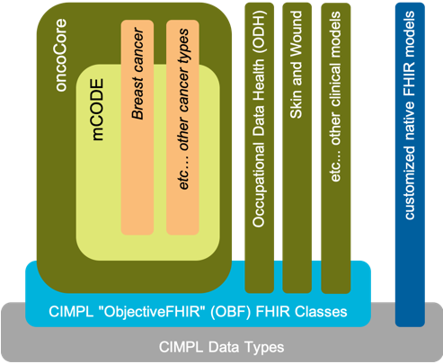

CIMPL Authoring Guide
Preface
CIMPL (Clinical Information Modeling Profiling Language) is a specially-designed language for defining clinical information models. It is simple and compact, with tools to produce Fast Healthcare Interoperability Resources (FHIR) profiles, extensions and implementation guides (IG). Because it is a language, written in text statements, CIMPL encourages distributed, team-based development using conventional source-code control tools such as Github. CIMPL provides tooling that enables you to define a model once, and publish that model to multiple versions of FHIR.
Purpose of this Document
This document provides a step-by-step guide to generate an HL7 FHIR implementation guide (IG) starting with documenting a model using CIMPL. The details about how to accomplish each step are in the CIMPL Language Reference Guide and CIMPL Tooling Reference Guide. Links to these documents are provided in each section.
Intended Audience
The CIMPL Authoring Guide is targeted to any person comfortable with using software developers or people comfortable with programming languages. Familiarity with FHIR is helpful as the tutorial references FHIR artifacts (such as Resources, Elements, etc.)
Prerequisite
This guide assumes you installed the software as documented in CIMPL SetUp and Installation, and have at least reviewed the Hello World, and CIMPL In-Depth tutorials. If you already have installed SHR-CLI, make sure you have the latest version installed.
Table of Contents
- CIMPL Authoring Guide
Using CIMPL to Create FHIR-based Models
CIMPL is designed to be modular and extensible, allowing for the reuse of other logical models, and inheritance from those models. The figure below illustrates this notion.

Model key:
- Gray: CIMPL data types
Primitives - Light blue: ObjectiveFHIR (OBF) models
- Dark green: models created using CIMPL, leveraging OBF
- Light yellow: mCode model, constrains and extends oncoCore, leverages OBF
- Tan: models that constrain and extend mCode
- Dark blue: FHIR resources and profiles
CIMPL allows the modeling author to represent FHIR profiles in one of two ways:
- Define the model specific resource attributes you need using FHIR resources or profiles as a base (clean slate). In this approach, the modeling author already knows the FHIR resources or profiles to customize, and defines the element constraints or extensions in the new FHIR profile.
- Leverage CIMPL's ObjectiveFHIR (OBF) base FHIR models - In this approach, the modeling author defines their FHIR profile and specifies a
Parentclass from the ObjectiveFHIR User Guide elements.
Each modeling approach has advantages and disadvantages.
The CIMPL clean slate authoring approach might be beneficial when prototyping models containing only a small number of new profiles with minimal changes from base FHIR. However, as the number of customizations increases, maintenance becomes more cumbersome and difficult to keep consistent between FHIR profiles.
On the other hand, using OBF FHIR models has significant benefits which include but are not limited to:
- saves the modeling author time in mapping common elements to their equivalent FHIR attribute.
- ensures consistency in the representation of commonly used attributes in different FHIR resources.
The user must however invest time to understand the OBF logical model. Also, OBF does not comprehensively support all FHIR resources, especially the new ones in R4 with a low maturity level.
Logical Model
Start by understanding the model you want to document in CIMPL, and its relationship to either base FHIR resources and profiles, or to OBF.
Keeping in mind that CIMPL is primarily a way to create logical models with the capability to model-once, translate-to-many, the modeling author should consider requirements-gathering and high level modeling steps. While one approach is proposed below, the modeling author is not limited to following these steps and might find better approaches to creating detailed clinical models.
- Define the use cases behind the creation of a model.
- Create a high-level conceptual model which addresses your defined use case and can be easily understood by both technical and clinical communities.
- Create a data dictionary listing the data elements, cardinality, and potential value sets involved if the data type is a coded element. This provides a convenient summary for implmenters presented in a way that can be understood by non-technical subject matter experts involved in defining the use cases.
- Start documenting your model with CIMPL.
Model Folder Structure and Source Control
Create a folder/directory to contain all files you create for the model. If you are modeling with a distributed team, you should consider using a source control system for you CIMPL files.
Configuration File
A configuration file sets parameters to drive IG creation.
By declaring optional parameters, your IG may include model documentation, a graphical view of the model, examples, or a data dictionary. These sections are automatically generated, are not required to include in the IG, but provide valuable information to IG consumers.
The data dictionary export might require manual adjustments before the IG is published. Review this document to make sure it meets your needs.
Namespace
Each model must define a namespace - this differentiates your model artifacts from others.
CIMPL Language Reference Guide
Class File
The Class file documents your model.
Decide if you need to import any namespaces (e.g. OBF).
Create your Class file with namespaces to import, and Entry, Property, Abstract and Element declarations.
CIMPL Language Reference Guide
Map File
Create a Map file if your model added properties beyond any inherited models.
Map the model specific properties to either FHIR resource/profile elements, or OBF.
CIMPL Language Reference Guide
Value Set File
Create this file when you need to constrain an Element Value of concept in the Class file and there is not an existing value set to reference.
To avoid redundant value sets, try to find an existing value set that fits your use case.
CIMPL Language Reference Guide
Content Profile File
Create a Content Profile file if there are properties in your model that are critical to IG compliance and must be supported. Any inerited model properties that are not already defined as MustSupport are listed in the same file.
Front Matter
Introductory text and possibly detailed text is required for IG readers and implementers to understand the background and intended use of your IG.
Create this information and declare the location in the Configuration file.
Reviewing a published IG might help you structure this material.
FHIR Examples
A FHIR IG can be generated without examples, however it is recommended to include examples.
The FHIR IG generation process requires that an examples folder/directory be defined in the Configuration file. The folder may be empty.
Compile the CIMPL Model
This step runs a syntax check on the Class, Map and Value Set files and prepares files for IG generation.
Errors may be issued from this step.
CIMPL Language Reference Guide
Publish the FHIR IG
The final step in the IG creation process is to run the FHIR IG Publisher. This tool is maintained and owned by HL7 FHIR.
By default, the FHIR IG Publisher performs validation checks on the StructureDefinition of specified FHIR profiles, value sets, and examples which reference any base resources or FHIR profiles. An output of these checks are found in the CIMPL output, qa.html.
CIMPL Language Reference Guide
Support
Questions on using CIMPL and its toolchain (SHR-CLI) can be addressed on the HL7 Zulip chat channel #cimpl
If you find an issue you can't resolve, or have a question, report it on one of two JIRA projects:
- Issues related to running the CIMPL SHR-CLI compiler, configuration files, or generating the FHIR Implementation Guide (IG): https://standardhealthrecord.atlassian.net/projects/CIMPL/issues
- Issues related to CIMPL base classes (Objective FHIR): https://standardhealthrecord.atlassian.net/projects/SHRM/issues